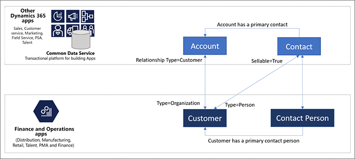

Erstellen und Verwalten von Kundenportalbenutzern
[!include[rename-banner](~/includes/cc-data-platform-banner.md)]In der Out-of-Box-Implementierung können sich Benutzer nicht selbst für Websites registrieren, die mithilfe des Kundenportals erstellt wurden. Um sich anzumelden und eine Website zu nutzen, müssen Benutzer vom Administrator eingeladen werden. Microsoft hat absichtlich die Möglichkeit der Benutzer blockiert, sich selbst zu registrieren.
Bevor ein Benutzer eine Website verwenden kann, muss für diesen Benutzer ein Kontaktdatensatz erstellt werden. Dieser Datensatz gibt an, zu welchem Kundenkonto und zu welcher juristischen Person der Benutzer gehört. Diese Informationen sind wichtig, um sicherzustellen, dass der Benutzer Kundenaufträge erstellen und anzeigen kann.
Wenn sich Benutzer selbst registrieren, werden automatisch Kontaktdatensätze für sie erstellt. Daher können Sie nicht sicherstellen, dass ein Benutzer das richtige Kundenkonto und die richtige juristische Person auswählt. Andererseits kann ein Administrator beim Einladungsprozess dem Kontaktdatensatz das richtige Kundenkonto und die richtige juristische Person zuweisen, bevor eine Einladung gesendet wird. Wenn Sie die Lösung so anpassen möchten, dass sich Benutzer selbst registrieren können, sollten Sie die möglichen Konsequenzen berücksichtigen.
-Video
Das Video Kunden zur Nutzung Ihres Kundenportals auffordern (oben) gehört zur Finance and Operations-Playlist auf YouTube.
Voraussetzungen für die Einrichtung
Kontakte in Power Apps Portal werden als Datensätze in der Entität Kontakte in Common Data Service gespeichert. Duales Schreiben synchronisiert diese Datensätze dann mit Microsoft Dynamics 365 Supply Chain Management wie erforderlich.

Stellen Sie vor dem Einladen neuer Kunden sicher, dass Sie die Option Kontakt Entität zuordnen in dualem Schreiben aktiviert haben.
Der Einladungsprozess
Führen Sie die folgenden Schritte aus, um einen vorhandenen Kontakt zum Kundenportal einzuladen Laden Sie Kontakte zu Ihren Portalen ein in der Power Apps Portaldokumentation.
Stellen Sie vor dem Einladen eines Kunden zum Kundenportal sicher, dass der Kontaktdatensatz des Kunden verfügbar ist und wie folgt eingerichtet ist:
- Legen Sie das Feld Unternehmen auf die juristische Person fest, zu der der Kunde in Supply Chain Management gehören soll.
- Legen Sie das Feld Kontonummer auf die Kontonummer des Kunden fest, zu der der Kunde in Supply Chain Management gehören soll.
Nachdem ein Kontakt erstellt wurde, sollte er im Supply Chain Management angezeigt werden können.
Weitere Informationen finden Sie unter Konfigurieren Sie einen Kontakt für die Verwendung in einem Portal in der Power Apps Portaldokumentation.
Out-of-Box-Webrollen und Entitätsberechtigungen
Benutzerrollen in Power Apps Portalen sind definiert durch Webrollen und Entitätsberechtigungen. Für das Kundenportal sind sofort einige Rollen definiert. Sie können neue Rollen erstellen und vorhandene Rollen ändern oder entfernen.
Out-of-Box-Webrollen
In diesem Abschnitt werden die Webrollen beschrieben, die mit dem Kundenportal bereitgestellt werden.
Weitere Informationen zum Ändern der Standardbenutzerrollen finden Sie unter Erstellen Sie Webrollen für Portale und Fügen Sie datensatzbasierte Sicherheit hinzu, indem Sie Entitätsberechtigungen für Portale verwenden in der Power Apps Portaldokumentation.
Administrator
Der Administrator überwacht und pflegt die Website. Diese Person wird das Kundenportal bereitstellen und einrichten. Der Administrator verwaltet die IT- und Sicherheitsaspekte des Portals und stellt sicher, dass alles reibungslos funktioniert. Der Administrator kann das Portal auch anpassen und/oder ändern, indem er neue Funktionen hinzufügt, neue Rollen erstellt und vieles mehr.
Kundenvertreter
Ein Kundenvertreter arbeitet für ein Kundenunternehmen und ist für die Verwaltung der Bestellungen verantwortlich, die das Unternehmen aufgibt. Der Kundenvertreter kann alle Bestellungen sehen, die für das Unternehmen und die Benutzer, die sie aufgegeben haben, aufgegeben wurden. Darüber hinaus kann der Kundenvertreter Informationen zum Gesamtkonto anzeigen und sehen, welche Kontakte im Namen dieses Kontos Bestellungen aufgeben können.
Autorisierte Benutzer
Autorisierte Benutzer können Bestellungen aufgeben und den Status der Bestellungen anzeigen, die sie aufgegeben haben. Sie können jedoch nicht den Status von Bestellungen anzeigen, die andere Benutzer in ihrem Unternehmen aufgegeben haben.
Nicht autorisierte Benutzer
Nicht autorisierte Benutzer können keine Daten anzeigen. Sie können nur öffentliche Informationen wie Geschäftsbedingungen und Details zu dem Unternehmen anzeigen, das das Kundenportal betreibt.
Beispiel
Die folgende Tabelle zeigt, welche Kundenaufträge die Benutzer in jeder Webrolle im System sehen können.
| Auftrag | Administrator | Kundenvertreter für Kunde X | Autorisierter Benutzer: Jane | Autorisierter Benutzer: Sam | Nicht autorisierte Benutzer: May |
|---|---|---|---|---|---|
| Kunde X Besteller: Jane | Ja | Ja | Ja | Nr. | Nr. |
| Kunde X Besteller: Sam | Ja | Ja | Nr. | Ja | Nr. |
| Kunde Y Besteller: May | Ja | Nr. | Nr. | Nr. | Nr. |
Note
Obwohl sowohl Sam als auch Jane Kontakte sind, die für Kunde X arbeiten, können sie nur die Bestellungen sehen, die sie selbst aufgegeben haben, und sonst nichts. Obwohl May eine Bestellung im System hat, kann sie diese Bestellung nicht im Kundenportal sehen, da sie eine nicht autorisierte Benutzerin ist. (Außerdem muss sie die Bestellung über einen anderen Kanal als das Kundenportal aufgegeben haben.)